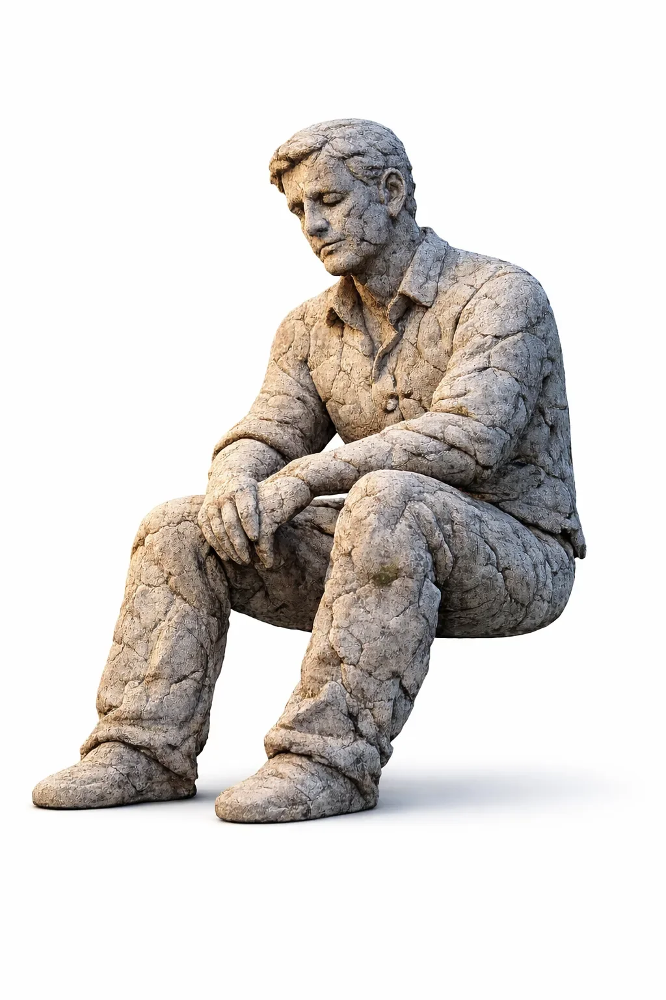

"소원 하나," 요정이 말했어요.
[One wish, the fairy said.]
남자는 웃었어요. "영원히 살고 싶어요."
[The man smiled. I want to live forever.]
요정이 손가락을 튕겼어요.
[The fairy snapped her fingers.]
남자는 돌이 됐어요.
[The man became stone.]
"축하해요," 요정이 속삭였어요. "돌은 안 죽어요."
[Congratulations, the fairy whispered. Stones don't die.]